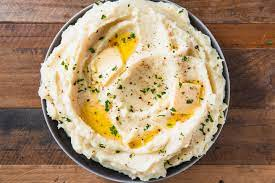

Mashed Potatoes

Caution: Extremely Tasty!
Mashed potatoes are a perfect side dish to go with any meal. This recipe shows you how to create the best side dish of all time.
Ingredients
- Potatoes:6-8 peeled and diced. The type of potatoes is your preferece. I prefer Idaho Potatoes or Russet Potatoes
- Coarse Sea Salt:4 tbsp
- Ground Black Pepper:2 tbsp
- Sour Cream:1 tbsp
- Milk:1/4 cup. You can use 2% or whole milk.
- Butter1-1/2 sticks
Steps
- Boil potatoes.Bring water to a boil and add the peeled and diced potatoes to the water. You shouldn't need more than 8 cups of water. Boil potatoes until they are soft. You can check the softness by taking a piece out and crushing it with a fork.
- Mash potatoes.Once the potatoes are soft, drain the water and place the potatoes in a large wooden or plastic bowl. Using an electric mixer or a hand masher, start mashing the potatoes until they start to blend together and do not contain chunks.
- Add the milk.Slowly add milk to the potatoes while you continue to mash them. This will start the fluff the potatoes.
- Add the butter. Place a stick of butter in the bowl and continue to mash the potatoes until the butter has completely melted.
- Add sour cream. Add the sour cream to the bowl and mix evenly.
- Top with salt and pepper.Top with salt and pepper and your potatoes are ready to serve!